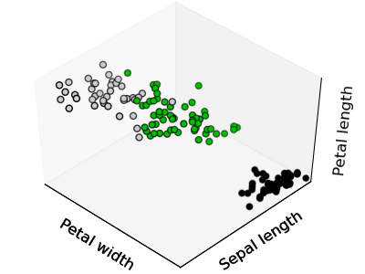

4. Unsupervised learning: seeking representations of the data¶
4.1. Clustering: grouping observations together¶
The problem solved in clustering
Given the iris dataset, if we knew that there were 3 types of iris, but did not have access to a taxonomist to label them: we could try a clustering task: split the observations in well-separated group called clusters.
4.1.1. K-means clustering¶
Note that their exists many different clustering criteria and associated algorithm. The simplest clustering algorithm is the k-means.

>>> from scikits.learn import cluster, datasets
>>> iris = datasets.load_iris()
>>> X_iris = iris.data
>>> y_iris = iris.target
>>> k_means = cluster.KMeans(k=3)
>>> k_means.fit(X_iris)
KMeans(verbose=0, k=3, max_iter=300, init='k-means++',...
>>> print k_means.labels_[::10]
[1 1 1 1 1 0 0 0 0 0 2 2 2 2 2]
>>> print y_iris[::10]
[0 0 0 0 0 1 1 1 1 1 2 2 2 2 2]
Warning
There is absolutely no garanty of recovering a ground truth. First choosing the right number of clusters is hard. Second, the algorithm is sensitive to initialization, and can fall in local minima, although in the scikits.learn we play many tricks to mitigate this issue.
|  |  |
 |
| Bad initialization | 8 clusters | Ground truth |
{kind=link}
Don’t over-interpret clustering results
Application example: vector quantization
Clustering in general and KMeans in particular, can be seen as a way of choosing a small number of examplars to compress the information, a problem sometimes known as vector quantization. For instance, this can be used to posterize an image:
>>> import scipy as sp
>>> lena = sp.lena()
>>> X = lena.reshape((-1, 1)) # We need an (n_sample, n_feature) array
>>> k_means = cluster.KMeans(k=5, n_init=1)
>>> k_means.fit(X)
>>> values = k_means.cluster_centers_.squeeze()
>>> labels = k_means.labels_
>>> lena_compressed = np.choose(labels, values)
>>> lena_compressed.shape = lena.shape
 |
 |
 |
 |
| Raw image | K-means quantization | Equal bins | Image histogram |
4.1.2. Hierarchical clustering: Ward¶
For estimating a large number of clusters, top-down approaches are both statisticaly ill-posed, and slow. Hierarchical clustering is a bottom-up approach that merges successively observations together and is particularly useful when the clusters of interest are made of only a few observations. Ward clustering minimizes a criterion similar to k-means in a bottom-up approach. When the number of clusters is large, it is much more computationally efficient than k-means.
4.1.2.1. Connectivity-constrained clustering¶
With Ward clustering, it is possible to specify which samples can be clustered together by giving a connectivity graph. Graphs in the scikit are represented by their adjacency matrix. Often a sparse matrix is used. This can be useful for instance to retrieve connect regions when clustering an image:

>>> # Downsample the image by a factor of 4
>>> lena = lena[::2, ::2] + lena[1::2, ::2] + lena[::2, 1::2] + lena[1::2, 1::2]
>>> X = np.reshape(lena, (-1, 1))
>>> # the structure of the data: pixels connected to their neighbors
>>> from scikits.learn.feature_extraction.image import grid_to_graph
>>> connectivity = grid_to_graph(*lena.shape)
>>> ward = cluster.Ward(n_clusters=30)
>>> ward.fit(X, connectivity=connectivity)
>>> labels = np.reshape(ward.labels_, lena.shape)
4.1.2.2. Feature agglomeration¶
We have seen that sparsity could be used to mitigate the curse of dimensionality, i.e the insufficience of observations compared to the number of features. Another approach is to merge together similar features: feature agglomeration. This approach can be implementing by clustering in the feature direction, in other words clustering the transposed data.

>>> digits = datasets.load_digits()
>>> images = digits.images
>>> X = np.reshape(images, (len(images), -1))
>>> connectivity = grid_to_graph(*images[0].shape)
>>> agglo = cluster.WardAgglomeration(connectivity=connectivity,
... n_clusters=32)
>>> agglo.fit(X)
>>> X_reduced = agglo.transform(X)
>>> X_approx = agglo.inverse_transform(X_reduced)
>>> images_approx = np.reshape(X_restored, images.shape)
transform and inverse_transform methods
Some estimators expose a transform method, for instance to reduce the dimensionality of the dataset.
4.2. Decompositions: from a signal to components and loadings¶
Components and loadings
If X is our multivariate data, the problem that we are trying to solve is to rewrite it on a different observation basis: we want to learn loadings L and a set of components C such that X = L C. Different criteria exist to choose the components
4.2.1. Principal component analysis: PCA¶
Principal component analysis select the successive components that explain the maximum variance in the signal.


The point cloud spanned by the observations above is very flat in one direction: one of the 3 univariate features can almost be exactly computed using the 2 other. PCA finds the directions in which the data is not flat
When used to transform data, PCA can reduce the dimensionality of the data by projecting on a principal subspace.
>>> # Create a signal with only 2 useful dimensions
>>> x1 = np.random.normal(size=100)
>>> x2 = np.random.normal(size=100)
>>> x3 = x1 + x2
>>> X = np.c_[x1, x2, x3]
>>> from scikits.learn import decomposition
>>> pca = decomposition.PCA()
>>> pca.fit(X)
>>> print pca.explained_variance_
[ 2.77227227e+00, 1.14228495e+00, 2.66364138e-32]
>>> Only the 2 first components are useful
>>> X_reduced = pca.fit_transform(X, n_components=2)
>>> X_reduced.shape
(100, 2)
4.2.2. Indenpendant Component Analysis: ICA¶
ICA selects components so that the distribution of their loadings carries a maximum amount of independant information. It is able to recover non-Gaussian independant signals:

>>> # Generate sample data
>>> time = np.linspace(0, 10, 2000)
>>> s1 = np.sin(2 * time) # Signal 1 : sinusoidal signal
>>> s2 = np.sign(np.sin(3 * time)) # Signal 2 : square signal
>>> S = np.c_[s1, s2]
>>> S += 0.2 * np.random.normal(size=S.shape) # Add noise
>>> S /= S.std(axis=0) # Standardize data
>>> # Mix data
>>> A = np.array([[1, 1], [0.5, 2]]) # Mixing matrix
>>> X = np.dot(S, A.T) # Generate observations
>>> # Compute ICA
>>> ica = decomposition.FastICA()
>>> S_ = ica.fit(X).transform(X) # Get the estimated sources
>>> A_ = ica.get_mixing_matrix() # Get estimated mixing matrix
>>> assert np.allclose(X, np.dot(S_, A_.T))
True